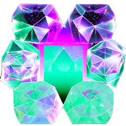
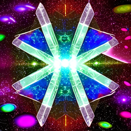

Holograms and crystals are two fascinating areas of study that have captivated the scientific community and the general public alike. Both fields offer new and innovative ways of looking at the world around us, as well as the potential to transform our lives in unexpected ways. In this paper, we will explore these two topics and analyze their importance in the modern world
The underlying science behind holography is complex but fascinating. The image produced by a hologram appears to be three-dimensional, but it is actually a two-dimensional surface that is recorded onto a photosensitive material.
 Another area of study that is closely related to holography is crystallography, which involves the study of the structure and properties of crystals.
Crystals are defined as solid materials whose atoms or molecules are arranged in a highly ordered, repetitive pattern extending in all three spatial dimensions.